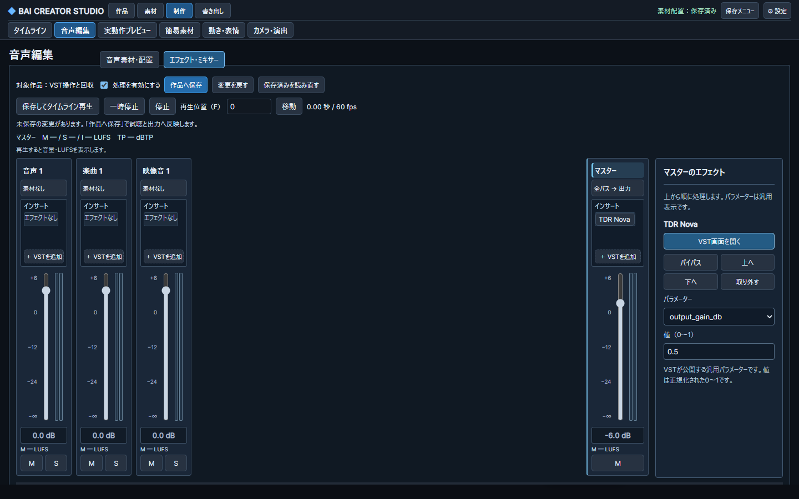
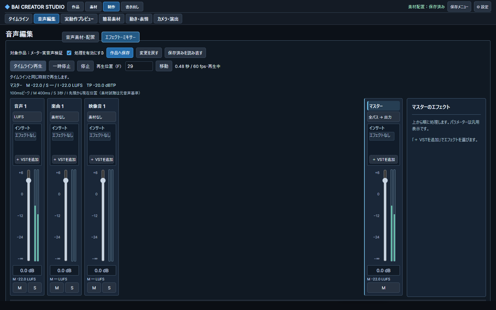
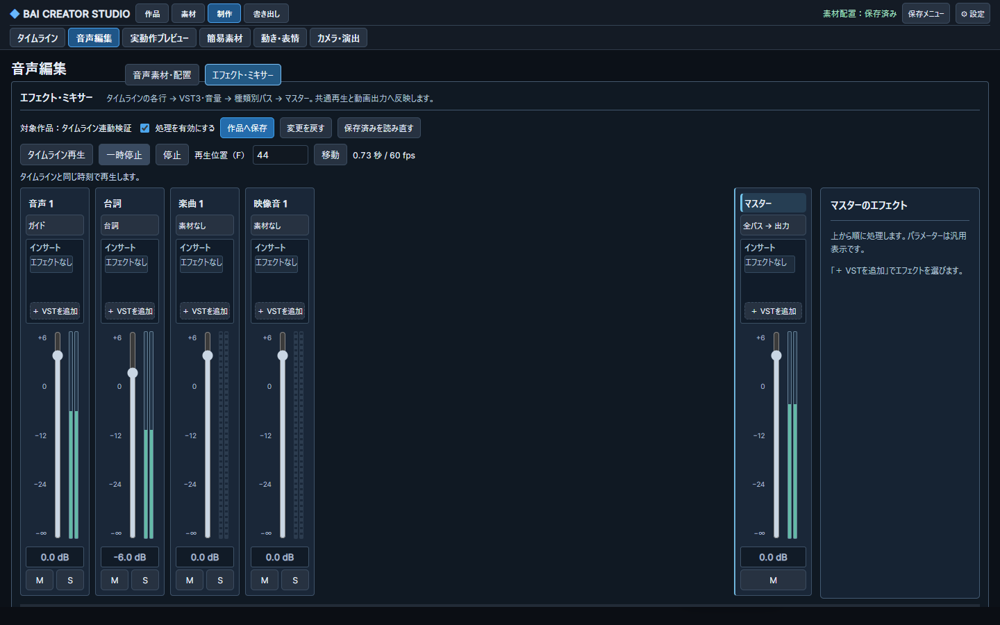

VSTをその場で開く・音量を再生と合わせる
実装済みの変更。画面は隔離したテスト作品です。
① インサート自体をダブルクリック／Enter
枠①のVST名から固有画面を直接開きます。右側のボタンへ移動する必要はありません。未保存の音量等は自動保存せず、VSTの変更だけを編集中の設定へ戻します。

① ここをダブルクリック画面内の汎用パラメーターは補助操作として保持。固有GUIはWindowsの別ウィンドウで開きます。② 実音声の左右ピークと各行・マスターのLUFS
②のバーが同じ再生位置の左右ピークを示し、③に各行のM、④にマスターのM/S/IとTrue Peakを表示します。停止するとバーは0へ戻り、LUFSはカーソル位置の値を保ちます。

② 左右ピーク③ 各行のM LUFS④ マスター M / S / I・TPM＝直前400ms、S＝3秒、I＝先頭から現在位置。素材試聴は元音声先頭を基準。設定を保存して再生すると処理済み音声へ反映します。
変更前

以前は区間全体のピーク表示のみ。固有GUI起動とLUFSは未接続でした。限定検証：実TDR Novaの固有画面表示・状態保存、opaque状態の実DSP、保存復旧、実PCMとChrome表示を確認。固有GUI内の値変更→保存→DSPの通し操作、全VST・Linux固有GUI・長尺・聴感・実スクリーンリーダーは未検証／未対応です。
Windows Python59成功、Ubuntu57成功/2skip、Chrome7種類のゲート成功。3視点の必須指摘を修正。詳細と旧失敗記録